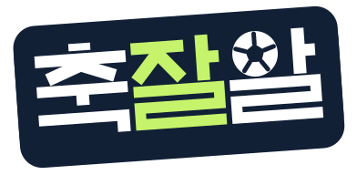
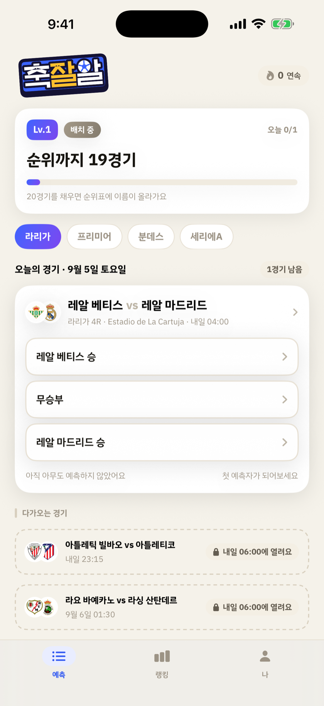
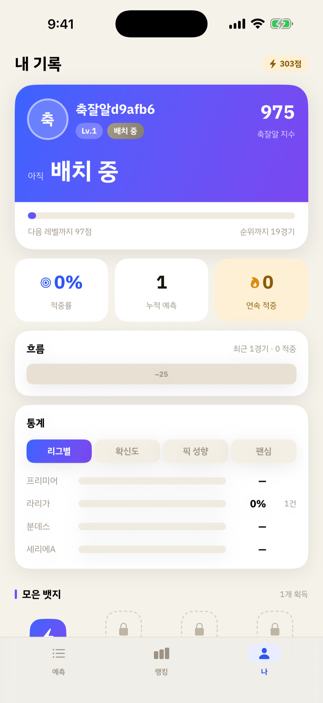
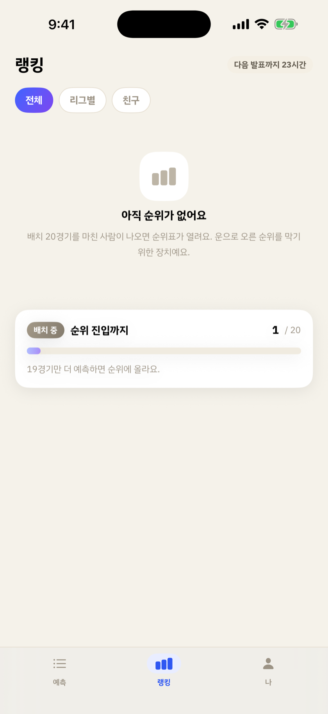

찍는 게 아니라, 읽는 사람들의 리그.
프리미어리그 · 라리가 · 분데스리가 · 세리에A. 오늘 경기의 승부를 고르고, 얼마나 확신하는지까지 겁니다.
App Store 출시 준비 중


누구나 맞힐 수 있는 경기를 맞히는 건 실력이 아닙니다.
축잘알은 남들이 어떻게 봤는지와 비교해서 점수를 매깁니다.
맞히는 것만으로는 순위가 오르지 않습니다. 얼마나 어려운 걸 읽어냈는지를 봅니다.
01
승·무·패를 고른 다음 확신도를 세 단계로 정합니다. 확신이 클수록 맞혔을 때 많이 얻고 틀렸을 때 많이 잃습니다. ‘아무거나 세게 거는’ 전략은 오래가지 않습니다.
02
일정과 결과를 매일 받아옵니다. 좋아하는 리그를 고른 순서대로 홈 화면이 정렬되고, 최애 팀 경기는 맨 위에 모입니다.
03
킥오프 한 시간 전에 경기 채팅이 열립니다. 실시간 스코어와 득점·경고 기록이 함께 올라오고, 앱을 닫아도 잠금화면에서 점수를 봅니다.
04
리그별 적중률, 확신도가 실제로 정확한지, 홈·무·원정 중 어디에 잘 거는지, 그리고 최애 팀 경기에서 팬심이 판단을 흐리는지까지.
05
정산된 예측 20경기를 채우면 순위표에 이름이 올라갑니다. 운으로 세 번 맞힌 사람이 1위가 되면 순위표가 의미를 잃기 때문입니다.
06
현금 베팅도, 상금도, 인앱 결제도 없습니다. 앱 안의 포인트는 현금으로 바꿀 수 없습니다. 겨루는 것은 오직 축구를 읽는 눈입니다.